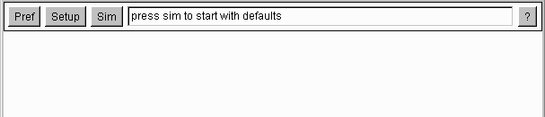

The applet
The minimum requirement of 3dAA to run as an applet, is use of a browser like Netscape 4.07+, IE 4+,
or JDK1.1+ Appletviewer. It can also be run as an application under
JDK 1.1+.
A second version requires Netscape 4.5+ / IE 4.0+, Java JRE 1.2
(includes Java plug-in), and Java3d JRE 1.1
 The 'Pref' panel allows selection of: an algorithm to simulate and
selection of font size for several text panels.
It contains text boxes that display information about the currently selected
algorithm, and the simulator.
It also has a box that displays total memory, and free memory.
The 'Setup' panel lets the user customize elements of an algorithm.
The raytracer allows its scene to be graphically input by the user. Scrollbars
and buttons are used to interactively position light sources and objects, and set their attributes.
A wireframe image of the scene illustrates user selections. The scene created can
be saved, and used in the 'Sim' panel. Default scenes can be selected to start.
The 'Sim' panel is the heart of the simulator. The interface is modeled
after work done in another simulator:
3DAAPE [Goldman] The sim panel
has two main interfaces. One panel has buttons that allow the user to
execute the algorithm, erase all panels, and record an animation of the
algorithm in execution. The second control panel allows control over the
animation: reverse, stop, forward, and speed of animation.
The 'Help' Panel has a single text area where information about the current
algorithm can be displayed.
The applet has four panels, any one of which can be displayed at a time. They can
be selected from a control bar at the top of the applet. The control bar also has
a text field that is used to display all messages sent to the user. Values of
variables are displayed here.